Cutoff rule 2025
This script creates vertical and horizontal lines separating columns of text and objects like pictures frames, ads, etc.
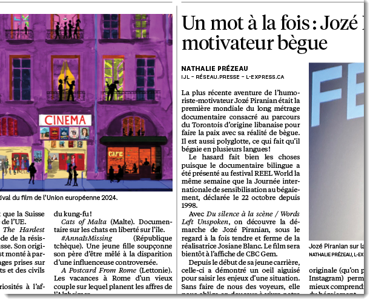
It reads parameters from the Cutoff rule.txt file and applies them depending on the object style applied to the selected frame. The file contains one or more objects enclosed in curly braces (1) and separated by commas. For example, if the ‘title’ object style is applied to the selected text frame, the set of parameters whose objStyle (2) is the same — ‘title’ — will be used.
groupObjectWithLine (3) — true/false — group the created line(s) with the selected frame(s).
Inside the style’s object, there are horizontal (4) and vertical (5) objects that contain parameters (also enclosed in curly braces) for, respectively, horizontal and vertical lines which have three settings for shifting lines that use the same system of coordinates as InDesign: positive values move to the right/downwards and negative to the left/upwards.
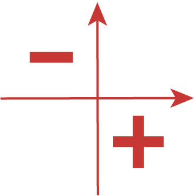
horizontal
vertical (6) — shifts a horizontal line vertically
left (7) — shifts the left end of a horizontal line horizontally
right (8) — shifts the right end of a horizontal line horizontally
vertical
horizontal (9) — shifts a vertical line horizontally
top (10) — the top end of a vertical line vertically
bottom (11) — the bottom end of a vertical line vertically
Below is a diagram explaining how it works:
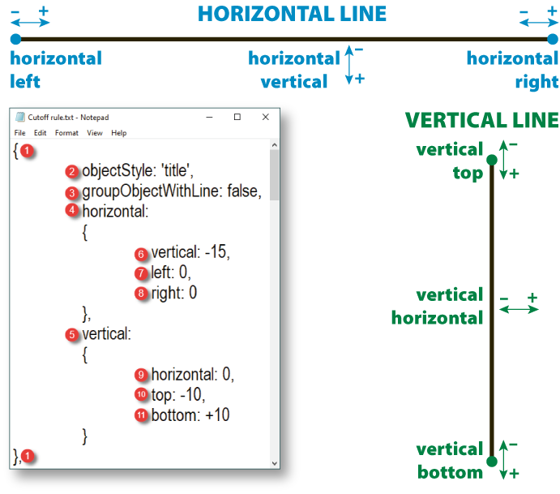
Note: according to my testing, if more than one frame is selected with different object styles applied, the style of the last selected frame is used for parameters. For example, if you are going to select two frames — say, title and text — and want to use the parameters for the title, first select text and then title (the last).
All the job is done by the main script — Cutoff rule.jsx — which is triggered by two other small scripts using the doScript() command which sends the only argument which is the file name itself (without extension): either Vertical or Horizontal.
All three scripts and the Cutoff rule.txt file should be located in the same folder.
The script processes two types of frames — advertisement and all other frames — differently.
Advertisement
If an ad is selected, it checks every side — top, bottom, left, right — and if it doesn’t touch the margin, the script adds the line.
Here, two lines were added at the top and to the left, but not at the bottom and to the right because they abut against margins.
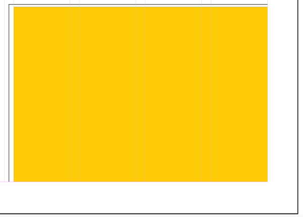
You can run either Horizontal.jsx or Vertical.jsx: for ads, it makes no difference. groupObjectWithLine (3) is set to true in the TXT file so the lines are grouped with the selected frame. Currently, only one frame should be selected at a time, but the action can be repeated on other frames one by one. In my testing, all lines are perfectly aligned providing a good visual effect.
Other frames
One or more frames can be selected.
Vertical.jsx
Case 1: If one frame is selected, or a few are selected and all of them are vertically aligned, a vertical line is added to the left or right of the selected frame(s) depending on the page’s side — verso or recto — and the location on the page (left or right half of the page).
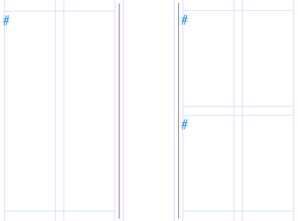
The height of the line equals the total height of the selected frame(s) plus the top (10) and bottom shift (11) values.
Note: while estimating whether frames are vertically aligned, the script uses the tolerance value, which is defined in the variable of the same name (set to 1 point by default). It means that frames can be misaligned — by +/– 1 pt — but still be considered vertically aligned. Feel free to adjust it to your needs.
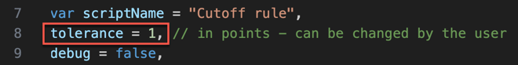
Case 2: If two are selected that are located horizontally, the line is added between the frames. Its height equals the height of the selected frame(s) plus the top (10) and bottom shift (11) values.
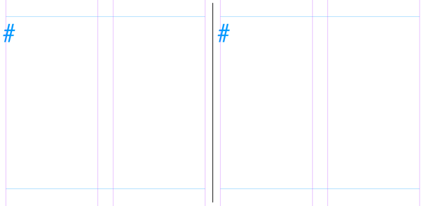
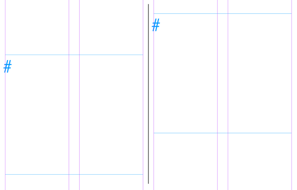
Horizontal.jsx
If one frame is selected, or if two are selected that are part of the same ‘article’ XML element, a horizontal line is added to the top of the selected frame(s). Its width equals the width of the selected frame(s).
For example, let’s take the settings on the screenshot above. With a title text frame selected, the created horizontal line will be the same width as the selected frame and moved by 15 points to the top (negative value). The left and right ends match edges of the frame because they are set to zero.
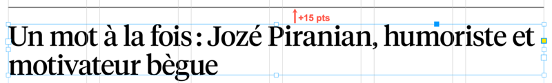
When a line is added, the Cutoff rule object style is applied to it.
Vertical lines — for both above-mentioned scripts — are added exactly in the middle of the gutter (of the current page).
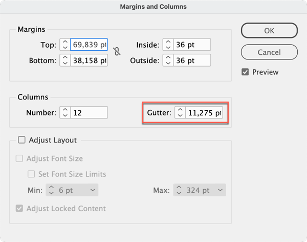
The stroke width — defined in the object style — is also taken into account. For instance, if it’s 0,25 pt, the line is shifted by 0,125 pt; if 2 pt — by 1 pt.
Vertical lines can be shifted horizontally by changing the vertical-horizontal parameter (9), which is set to zero by default. The shift of the top (10) and bottom (11) edges can also be changed.
Horizontal lines — can be shifted vertically with horizontal-vertical parameter (6), and their left (7) and right (8) edges can be moved as well.
The script temporarily sets:
- Units to points
- Zero point to the top-left corner of the page
- Ruler origin to page origin
In the end, the script restores the original settings and deselects what was selected.
You can Undo/Redo the whole script.
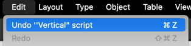
This is still a work in progress: the script has some extra code for debugging that I’m going to remove in the future.
Click here to download the script.